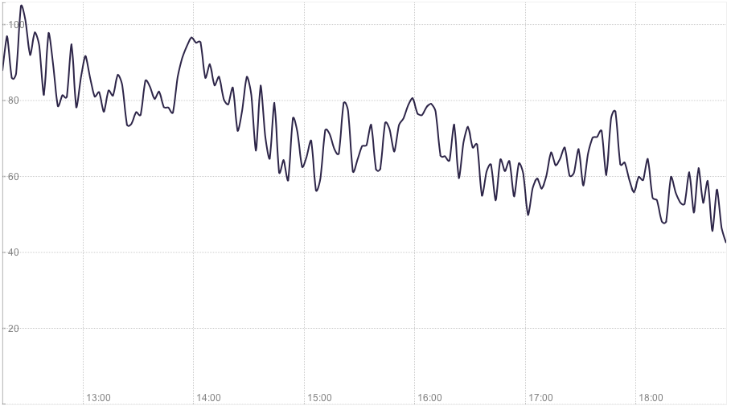
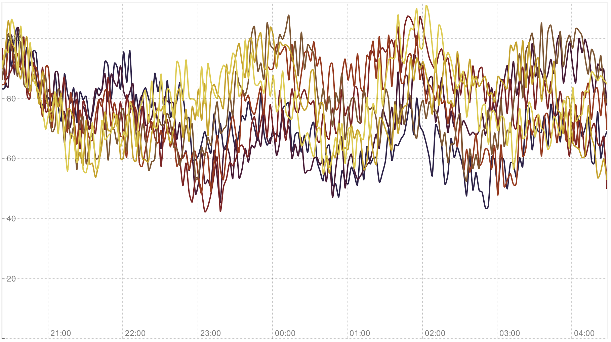
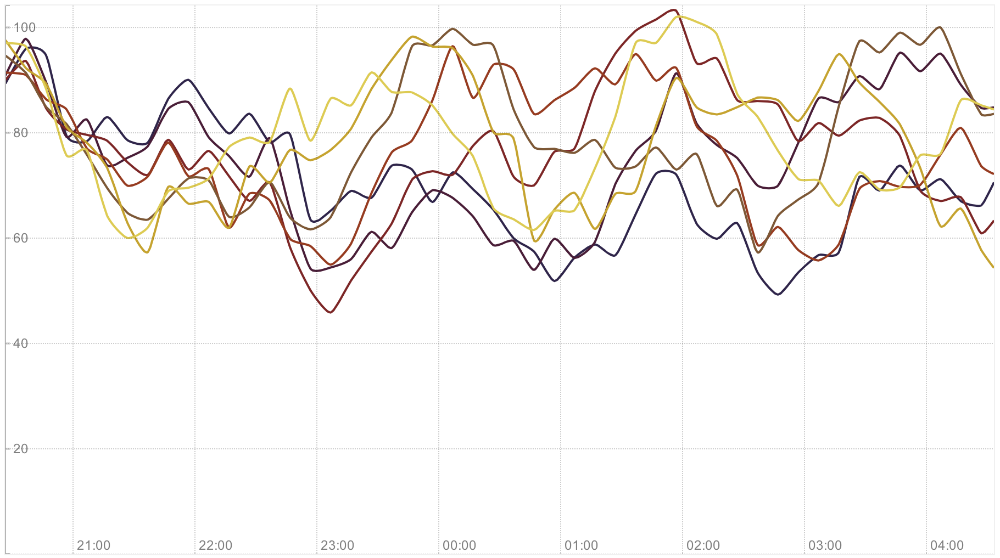

d3.js
for
real-time visualizations
Agenda
- Data visualizations
- Advantages and disadvantages
- Interactive monitoring
- Summary
What is d3?
Details
- One of the most popular library on GitHub
- 293kB (137kB minified)
- BSD licensed
- Created by Mike Bostock
Why d3?
Joins data with the DOM elements
Style with CSS and interact with JS events
Easy to debug and extend
Fast, simple and efficient
Animations and transitions
Visualizations
Requirements
- Faster analysis
- Observe relations between data
- Watch unusual situations
- Consider better decisions
Problems
- Strong and weak points of human perception
- Transform data to readable form
- Different visual chanells
Possibilities
- Interactive parts of visualizations
- Manipulate with color, size, shape, and value
- Loading recent dataset
- Data on demand
Mistakes
Too many noise on dataset
Small noise on dataset

Too many series with noisy points
Too many series without noisy points
Few series without noisy points

Easy to observe first serie and sum
Difficult to check other series

Impossible to observe sum
Easy to check all series

Examples
Line chart
General and details
Context and panning
Independent 2nd serie and axis
Pie chart
Partial usage on scope
Total value of series
Loading recent values and refreshing
Traffic chart
Unique users and page views
Real traffic between services
Visual load on each node
Cubism.js
- Scalable, efficient, and flexible
- Defined interval for loading new points
- Vertical compression and horizontal comparsion